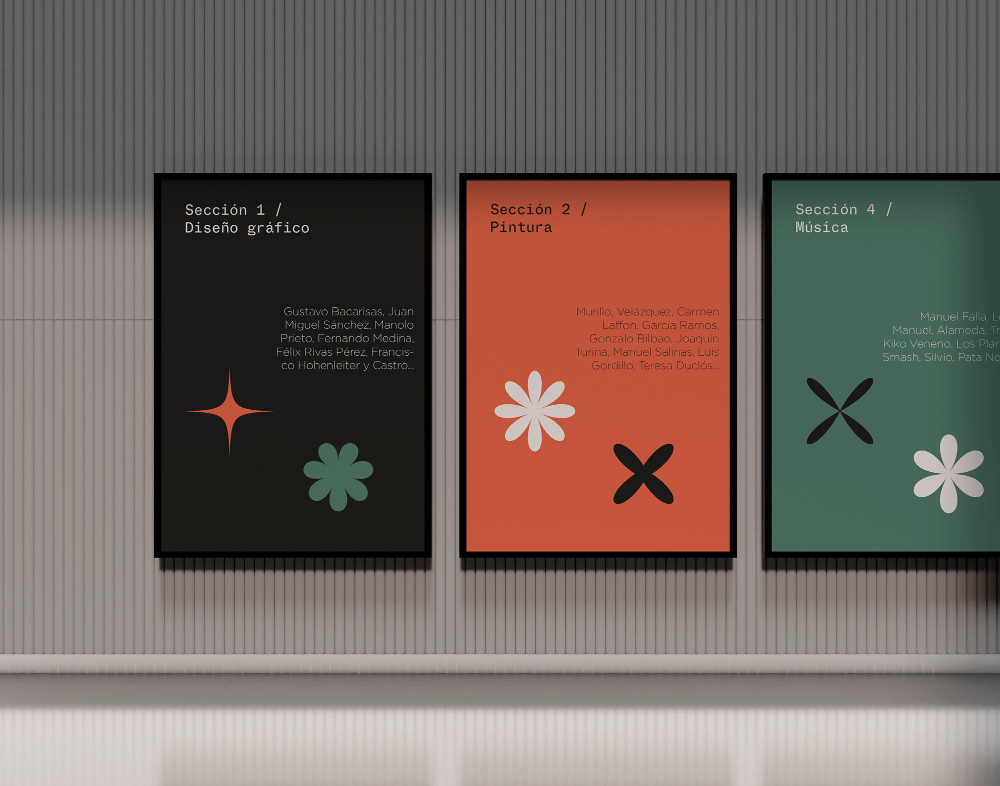
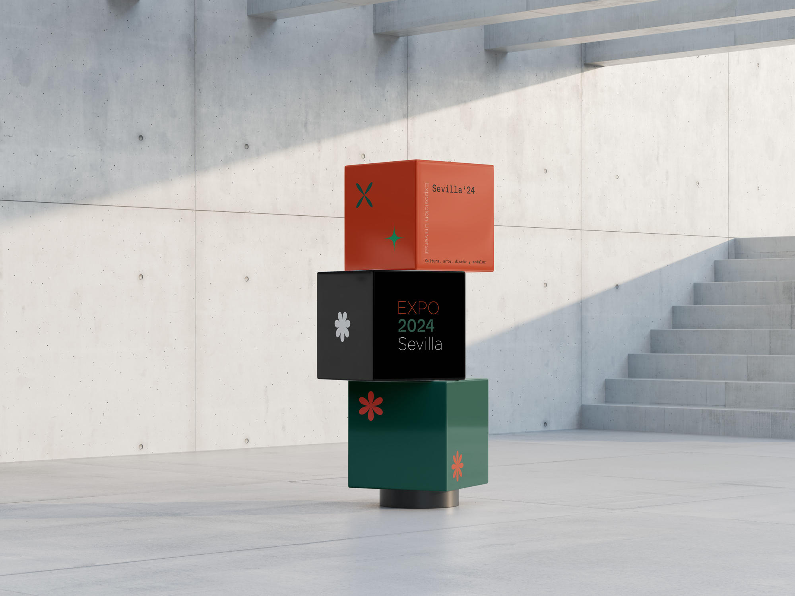
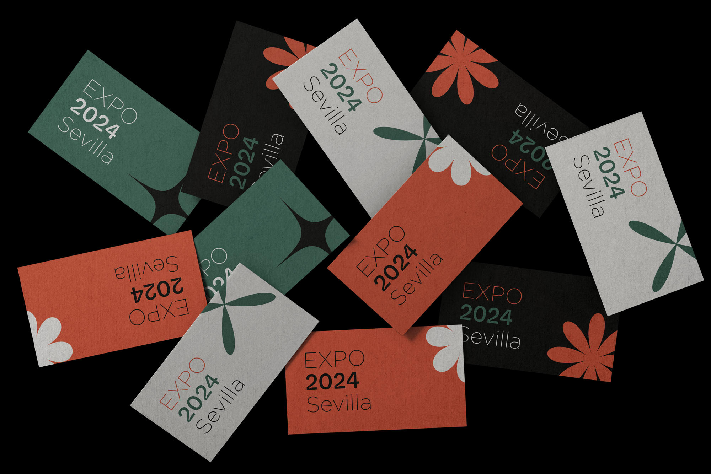
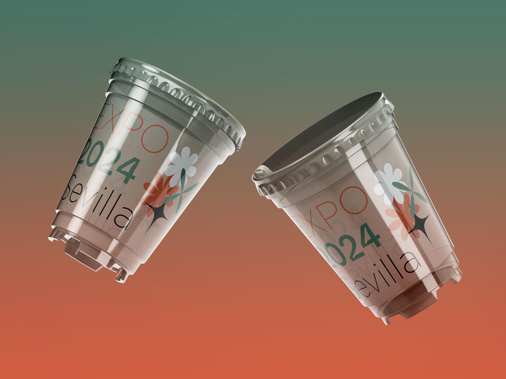
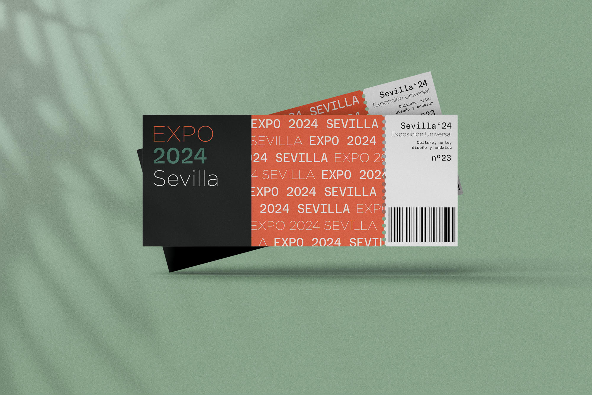
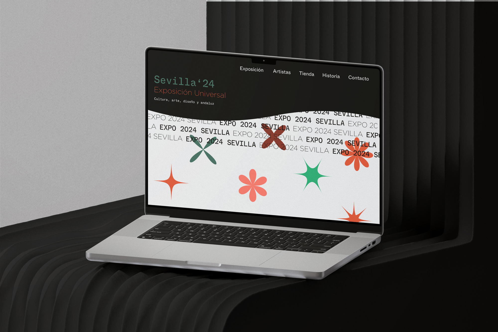
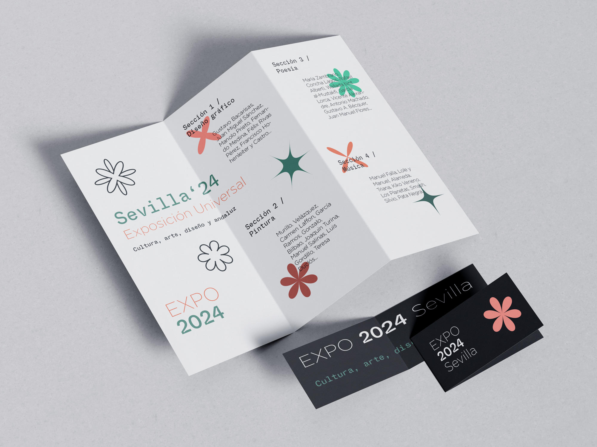

Expo
— Sevilla 2024
Graphic system for a fictitious cultural exhibition in Seville in 2024


This project consists in a simple and brief graphic system designed for a fictional Universal Exposition in 2024 in Seville, which celebrates and highlights the rich Andalusian culture, art and design. This event will be held at the emblematic Real Fábrica de Artillería, providing an ideal historical and cultural setting for the occasion.

The graphic system has been conceived to reflect the vibrant and diverse essence of Andalusia. The main logo is the heart of this identity, incorporating iconic elements that evoke Andalusian tradition and modernity. The color palette is inspired by the warm tones of sun and earth, complemented by vivid hues that capture the energy and passion of the region. It also reflects the colors of famous fruit of seville, the orange.
This graphic system not only seeks to be aesthetically appealing, but also functional and representative of Andalusia's rich cultural heritage. Each visual element is designed to capture attention and create a memorable experience for all participants and visitors to the universal exposition. The tools used for the creation of the identity were Adobe Illustrator, Adobe photoshop, and Adobe XD.



